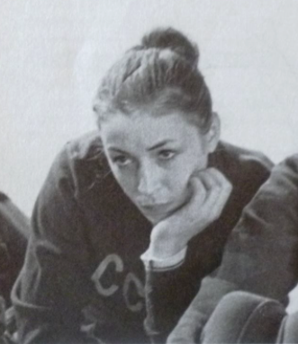

Tatiana Schegolkova (USSR)
1973 Riga Intl. AA Champion
1969 University Games AA Silver Medalist

Tatiana was coached by Zoya Svikova and Leonid Sergeyev and trained at the Dinamo club. A 1976 graduate of the Latvian State Institute for Physical Culture, she worked as a choreographer for the USSR's sports acro teams. Evgeny Marchenko and Natalia Miller's winning pairs routine at the 1986 world championships was choreographed by Schegolkova.
She's been living and working in the USA for over two decades and currently coaches at Texas Best Gymnastics in McKinney.
Competition Results
1965
Latvian Championships: 1st AA
Riga City Youth Championships (Class I): 1st AA
1966
Latvian Schools Spartakiade: 2nd AA
Latvian Championships: 2nd B, 1st FX
1967
Latvian Schools Spartakiade: 1st AA
POL-USSR Dual Meet: 1st Team, 2nd AA
1968
All-Union Dinamo Championships: 8th AA, 1st UB, 2nd V
Jr. USSR Cup: 2nd AA
Krakow International: 1st AA
Latvian Championships: 2nd AA
1969
All-Union Championships of Olympic Reserves Schools: 1st Team, 1st AA, 1st B
Dinamo Clubs (USSR/GDR/TCH) Meet: 1st Team, 6th AA
POL-USSR Dual Meet: 1st Team, 1st AA
USSR Championships: 8th AA
1970
All-Union "Best Routine" Competition: 1st BB
Cup of the Latvian Republic: 1st AA
University Games: 1st Team, 2nd AA
USSR Cup: 7th AA, 5th UB
1971
Cup of the Latvian Republic: 1st AA
JPN-URS Dual Meet: 1st Team, 2nd B
Riga International: 2nd AA, 3rd V, 3rd B, 4th UB
ROM-USSR Dual Meet: 1st Team, 3rd AA
USSR Championships: 9th AA, 5th B
USSR Cup: 6th AA
1972
Riga International: 3rd AA, 1st FX, 2nd UB, 5th V, 5th B
USSR-TCH Dual Meet: 1st Team, 7th AA, 4th V, 4th UB
USSR Championships: 9th AA, 5th UB, 5th FX
USSR Cup: 8th AA, 5th B, 5th FX
1973
Latvian Championships: 1st AA
Riga International: 1st AA, 2nd V, 4th B, 6th FX
USSR Championships: 6th AA
USSR Cup: 4th B
1975
USSR Spartakiade: 9th Team, 29th AA
This page was created on January 11, 2022 and was last updated on July 5, 2026.
© Gymn Forum